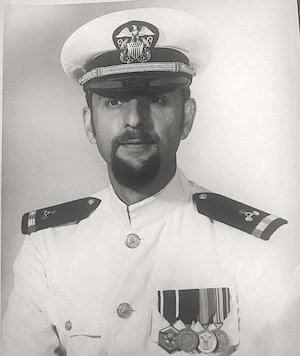

Service & Devotion
Anthony (Tony) Paul Battaglia, born March 18, 1945, passed away on February 20, 2024, at the age of 78. A proud Navy veteran, Tony dedicated over 20 years of service to his country, retiring as Lieutenant Commander (LCDR) in 1991.

Family & Legacy
Tony is survived by his sister, Mary G. Battaglia; his daughter, Benita Weaver; and his twin sons, Nino Battaglia and Jean Pierre Battaglia. He also leaves behind two grandchildren, Mia Weaver and Anthony Imbriaco, as well as two great-grandchildren, Ella and Lana Imbriaco. Later in life, Tony remarried and had a daughter, Elizabeth Battaglia.

Honor & Recognition
His military career earned him numerous decorations, including the Third Navy Commendation Medal, Second Navy Achievement Medal, Third Good Conduct Award, Second National Defense Service Medal, Third Meritorious Unit Commendation, Third Battle “E” Ribbon, Nine Sea Service Deployment Ribbons, Tenth Overseas Ribbon, and the Navy Expeditionary Medal.
May He Rest in Peace
Tony bravely fought cancer before passing. Though life took him down different paths, his legacy as a serviceman, father, brother, and friend endures. May he rest in peace.